5 — Regularization
Download this tutorial as a Jupyter notebook (with NotebookUtils.jl next to it).
Undersampled reconstruction is ill-posed: many images explain the measured samples. Ristretto solves
\[\min_x \tfrac12\|\mathcal{A}x - y\|_2^2 + \sum_i \lambda_i R_i(x)\]
See docs/src/high-level/regularization.md for the full reference list and a "Choosing a regularizer" table. Temporal and low-rank terms have a tutorial of their own (07_dynamic_and_decomposition.md) because they need a dynamic series.
Contents
- The common test problem
- Image-domain terms —
L2Image,L1Image - Transform sparsity —
L1Wavelet2D,L1Wavelet3D,L1Contourlet - Total variation —
TotalVariation2D/3D, anisotropic, second order, TGV, Huber - Non-convex sparsity —
L0Image,L0Wavelet2D - Plug-and-play priors
- Joint sparsity and reference priors
- Constraints
- Combining terms, and choosing λ
using .NotebookUtils
using Ristretto
using Ristretto: get_operator
using GeometricMedicalPhantoms: create_shepp_logan_phantom, MRISheppLoganIntensities,
create_tubes_phantom, TubesIntensities
using MIRTjim: jim
using NamedDims
using Plots
using LinearAlgebra: norm
using Random
Random.seed!(0);1. The common test problem
128², eight coils, 4× variable-density undersampling, a little noise.
nx, ny, nc = 128, 128, 8
x_true = create_shepp_logan_phantom(
nx, ny, :axial; ti = MRISheppLoganIntensities(), eltype = ComplexF32
)
# Noise on the image itself, at a clinical SNR (tutorial 03 §7): `snr` is the mean signal in a box
# at the centre of the image over the noise level, the ratio `estimate_snr` measures back.
x_noisy = add_noise(x_true; snr = 100)
smaps = coil_sensitivities(nx, ny, nc)
pattern = create_sampling_pattern(
VariableDensitySampling(PolynomialDistribution(3), 4.0, 0.05), (nx, ny)
)
acq = AcquisitionInfo(;
is3D = false, image_size = (nx, ny), subsampling = pattern, sensitivity_maps = smaps
)
data = simulate_acquisition(x_noisy, acq; keep_sensitivity_maps = true)
nrmse1(x̂) = nrmse(x̂, x_true)
x_direct = reconstruct(data)
println("direct (adjoint) NRMSE: ", round(nrmse1(x_direct), digits = 4))
jim(x_direct; title = "starting point: direct reconstruction", size = (400, 350))# A helper that reconstructs and reports, used throughout the tutorial.
function show_recon(method, title; kwargs...)
x̂ = reconstruct(data, method; kwargs...)
println(title, " — NRMSE ", round(nrmse1(x̂), digits = 4))
return x̂
endshow_recon (generic function with 1 method)2. Image-domain terms
L2Image (Tikhonov)
Problem: $\min_x \tfrac12\|\mathcal{A}x - y\|_2^2 + \lambda\|x\|_2^2$
Description: Quadratic, smooth, solvable with conjugate gradient — the standard regularized-SENSE baseline, and the only term here that needs no proximal step at all. Tikhonov is an exported alias for the same type. Its strength is speed and predictability: the problem stays a linear system, so there is nothing to tune but λ. Its weakness is that it penalizes edges exactly as hard as noise, so noise suppression and resolution are traded one for one — too small barely regularizes (the NRMSE floor is the aliasing/noise level of the direct reconstruction), too large smooths away the anatomy along with the noise. The two λ below are chosen so the difference is visible at a glance, not just in the NRMSE number.
References:
- A. N. Tikhonov, "Solution of incorrectly formulated problems and the regularization method," Soviet Mathematics Doklady, vol. 4, pp. 1035–1038, 1963 — the penalty itself.
- K. P. Pruessmann, M. Weiger, P. Börnert, and P. Boesiger, "Advances in sensitivity encoding with arbitrary k-space trajectories," Magnetic Resonance in Medicine, vol. 46, no. 4, pp. 638–651, 2001, doi: 10.1002/mrm.1241 — the iterative SENSE formulation this term regularizes, quadratic penalty included.
Availability in other toolboxes:
- BART —
pics -R Q:λ(ℓ₂ in the image domain), or-l2 -r λ. - SigPy —
sigpy.prox.L2Reg, orsigpy.mri.app.SenseRecon(..., lamda=λ). - MRIReco.jl —
L2Regularization(λ), the defaultregof its CG-SENSE solver.
x_l2_good = show_recon(IterativeReconstruction(L2Image(1.0f-4); maxit = 40), "L2Image λ=1e-4 (well chosen)")
x_l2_over = show_recon(IterativeReconstruction(L2Image(1.0f0); maxit = 40), "L2Image λ=1e0 (over-regularized)")
# The over-regularized solution is heavily shrunk in magnitude; rescale it to the well-chosen
# image's peak before display, so the comparison is about lost structure, not lost brightness.
x_l2_over_scaled = x_l2_over .* (maximum(abs, x_l2_good) / maximum(abs, x_l2_over))
side_by_side(
x_l2_good, x_l2_over_scaled;
titles = (
"λ = 1e-4 (well chosen)\nNRMSE $(round(nrmse1(x_l2_good), digits = 3))",
"λ = 1e0 (over-regularized)\nNRMSE $(round(nrmse1(x_l2_over), digits = 3))",
),
)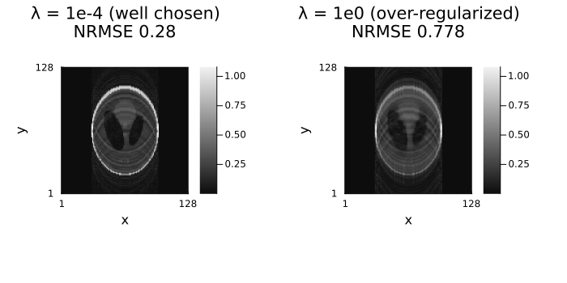
L1Image
Problem: $\min_x \tfrac12\|\mathcal{A}x - y\|_2^2 + \lambda\|x\|_1$
Description: Sparsity of the image itself, enforced by soft thresholding. Right for genuinely sparse objects — angiography, where most of the FOV is background — and too aggressive for anatomy, where it eats low-contrast tissue along with the noise. It also biases the amplitudes it keeps downward by λγ, which §5's ℓ₀ terms exist to avoid.
References:
- M. Lustig, D. Donoho, and J. M. Pauly, "Sparse MRI: The application of compressed sensing for rapid MR imaging," Magnetic Resonance in Medicine, vol. 58, no. 6, pp. 1182–1195, 2007, doi: 10.1002/mrm.21391 — the reference for ℓ₁ sparsity penalties in MRI generally.
Availability in other toolboxes:
- BART —
pics -R I:λ. - SigPy —
sigpy.prox.L1Reg. - MRIReco.jl —
L1Regularization(λ).
x_l1 = show_recon(IterativeReconstruction(L1Image(5.0f-3); maxit = 40), "L1Image λ=5e-3")
jim(x_l1; title = "L1Image", size = (400, 350))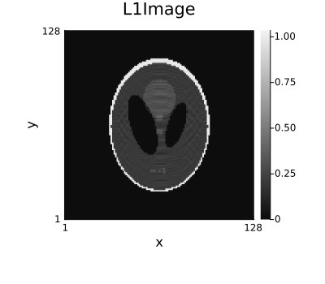
3. Transform sparsity
L1Wavelet2D
Problem: $\min_x \tfrac12\|\mathcal{A}x - y\|_2^2 + \lambda\|\mathcal{W}x\|_1$
Description: The compressed-sensing default: anatomy is compressible in a wavelet basis, so an ℓ₁ penalty on the coefficients removes incoherent aliasing while keeping edges. Cheap (an orthogonal transform, so the prox is exact soft thresholding of the coefficients) and robust across anatomies; its weakness is the blocky, texture-suppressing look at high λ, and a dependence on the wavelet family and level count shown below. get_operator gives the transform itself, which is worth looking at.
References:
- M. Lustig, D. Donoho, and J. M. Pauly, "Sparse MRI: The application of compressed sensing for rapid MR imaging," Magnetic Resonance in Medicine, vol. 58, no. 6, pp. 1182–1195, 2007, doi: 10.1002/mrm.21391 — the paper that popularized this combination for MRI.
Availability in other toolboxes:
- BART —
pics -R W:7:0:λ: the first number is the bitmask of dimensions the wavelet transform runs over (7 = dimensions 0, 1, 2), the second the bitmask of dimensions thresholded jointly. - SigPy —
sigpy.mri.app.L1WaveletRecon(ksp, mps, lamda). - MRIReco.jl — supported, through the general mechanism rather than a dedicated type: pass
reg = L1Regularization(λ)together withregTrafo = <wavelet operator>, i.e. the sparsifying transform is given as a separate operator argument (MRIReco.jlbuilds one withMRIOperators.WaveletOp(shape)), and the ℓ₁ penalty is applied to its output.
reg_w = L1Wavelet2D(2.0f-3)
𝒲 = get_operator(reg_w, x_true)
coeffs = 𝒲 * x_noisy
x_wav = show_recon(IterativeReconstruction(reg_w; maxit = 60), "L1Wavelet2D λ=2e-3")
jim(
jim(log.(abs.(coeffs) .+ 1.0f-4); title = "wavelet coefficients (log)"),
jim(x_wav; title = "L1Wavelet2D reconstruction");
layout = (1, 2), size = (800, 350)
)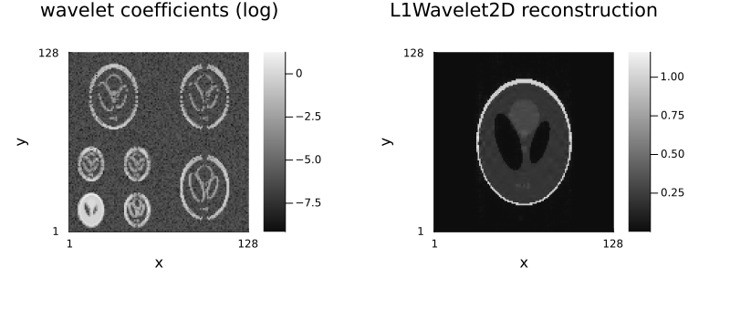
# Options: the wavelet family and the number of decomposition levels.
x_haar = show_recon(IterativeReconstruction(L1Wavelet2D(2.0f-3; wavelet = WT.haar); maxit = 60), "Haar")
x_db8 = show_recon(IterativeReconstruction(L1Wavelet2D(2.0f-3; wavelet = WT.db8, levels = 3); maxit = 60), "db8, 3 levels")
jim(
jim(x_haar; title = "Haar"),
jim(x_db8; title = "Daubechies-8, 3 levels");
layout = (1, 2), size = (800, 350)
)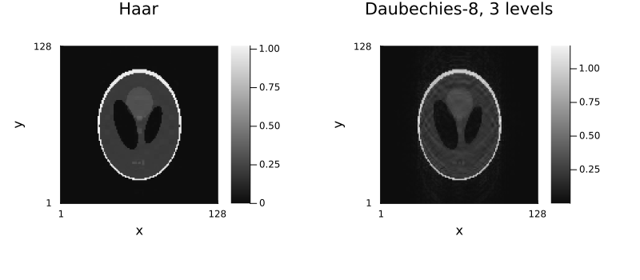
L1Wavelet3D
Problem: $\min_x \tfrac12\|\mathcal{A}x - y\|_2^2 + \lambda\|\mathcal{W}_{3D}x\|_1$
Description: The same penalty as L1Wavelet2D with a three-dimensional transform, for volumes and multi-slice stacks. It exploits correlation between neighbouring slices, so at the same λ it is stronger than a per-slice 2D transform on a genuine volume — and worse than one on a stack of unrelated slices.
References:
- M. Lustig, D. Donoho, and J. M. Pauly, "Sparse MRI: The application of compressed sensing for rapid MR imaging," Magnetic Resonance in Medicine, vol. 58, no. 6, pp. 1182–1195, 2007, doi: 10.1002/mrm.21391.
Availability in other toolboxes:
- BART — the same
-R Woption with the third spatial dimension included in the transform bitmask:-R W:7:0:λtransforms dimensions 0, 1 and 2 (x, y, z), against-R W:3:0:λfor the 2D case. The option is the same; only the bitmask changes. - SigPy —
sigpy.mri.app.L1WaveletReconwith a 3D image shape:sigpy.linop.Wavelettakes the number of dimensions from the shape it is given, so a 3Dmpsproduces a 3D transform. - MRIReco.jl — as in the 2D case,
reg = L1Regularization(λ)plus aregTrafobuilt for the 3D shape (MRIOperators.WaveletOp((nx, ny, nz))).
x3d = create_shepp_logan_phantom(64, 64, 32; ti = MRISheppLoganIntensities(), eltype = ComplexF32)
smaps3d = coil_sensitivities(64, 64, 32, 4)
pattern3d = create_sampling_pattern(
VariableDensitySampling(PolynomialDistribution(3), 4.0, 0.05), (64, 64, 32)
)
acq3d = AcquisitionInfo(;
image_size = (64, 64, 32), sensitivity_maps = smaps3d, subsampling = pattern3d
)
data3d = simulate_acquisition(x3d, acq3d; keep_sensitivity_maps = true)
x3d_wav = reconstruct(data3d, IterativeReconstruction(L1Wavelet3D(2.0f-3); maxit = 30))
println("3D NRMSE: ", round(nrmse(x3d_wav, x3d), digits = 4))
jim(x3d_wav[:, :, 9:4:29]; title = "L1Wavelet3D, four slices", nrow = 1, size = (1000, 280))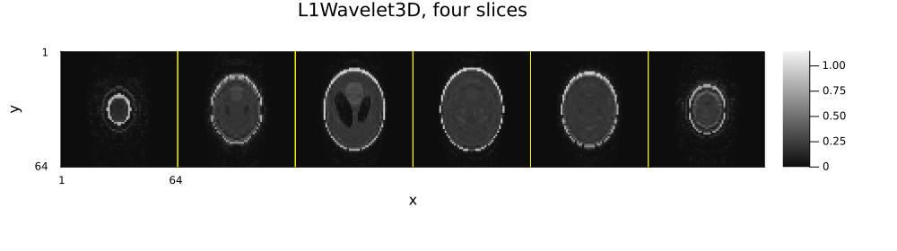
2D and 3D regularizers are not tied to 2D and 3D encoding. The
2D/3Din a regularizer's name says how many dimensions its transform spans, not what kind of acquisition it may be used with. Beyond the two obvious pairings there are two useful mixed ones:
- a 2D regularizer on 3D-encoded data applies the transform slice by slice. Every slice is then regularized independently, which is what lets the reconstruction split into per-slice tasks (tutorial 06 §8) and makes it the faster of the two.
- a 3D regularizer on multi-slice 2D-encoded data couples the slices through the transform. It cannot be split, so it costs more, but it exploits correlation between neighbouring slices and usually gives the better image — provided the slices really are a contiguous volume.
The same applies to every other
2D/3Dpair in this tutorial (TotalVariation2D/3D,AnisotropicTotalVariation2D/3D, and the rest).
L1Contourlet
Problem: $\min_x \tfrac12\|\mathcal{A}x - y\|_2^2 + \lambda\|\mathcal{C}x\|_1$
Description: The nonsubsampled contourlet transform is directional: elongated, oriented structures — vessels, fibres, sharp curved boundaries — need far fewer coefficients than in a wavelet basis, so at the same λ they survive better. The costs are real: the transform is redundant (a stack of directional subbands rather than a basis), so it is several times more expensive per iteration and uses more memory. The bands shown below are what the penalty acts on — coarse approximation first, then increasingly fine directional detail.
References:
- A. L. da Cunha, J. Zhou, and M. N. Do, "The nonsubsampled contourlet transform: Theory, design, and applications," IEEE Transactions on Image Processing, vol. 15, no. 10, pp. 3089–3101, 2006, doi: 10.1109/TIP.2006.877507.
Availability in other toolboxes:
- BART — none.
- SigPy — none.
- MRIReco.jl — none.
No direct equivalent anywhere else: the transform itself would have to be supplied.
reg_c = L1Contourlet(2.0f-3)
𝒞 = get_operator(reg_c, x_true)
bands = 𝒞 * x_noisy
println("contourlet stack: ", size(bands))
x_cont = show_recon(IterativeReconstruction(reg_c; maxit = 30), "L1Contourlet λ=2e-3")
nbands = size(bands, 3)
band_idx = unique(round.(Int, range(1, nbands; length = min(4, nbands))))
rows_c, cols_c = grid_layout(length(band_idx) + 1)
jim(
(jim(bands[:, :, b]; title = "band $b/$nbands") for b in band_idx)...,
jim(x_cont; title = "L1Contourlet reconstruction");
layout = (rows_c, cols_c), size = (330 * cols_c, 330 * rows_c)
)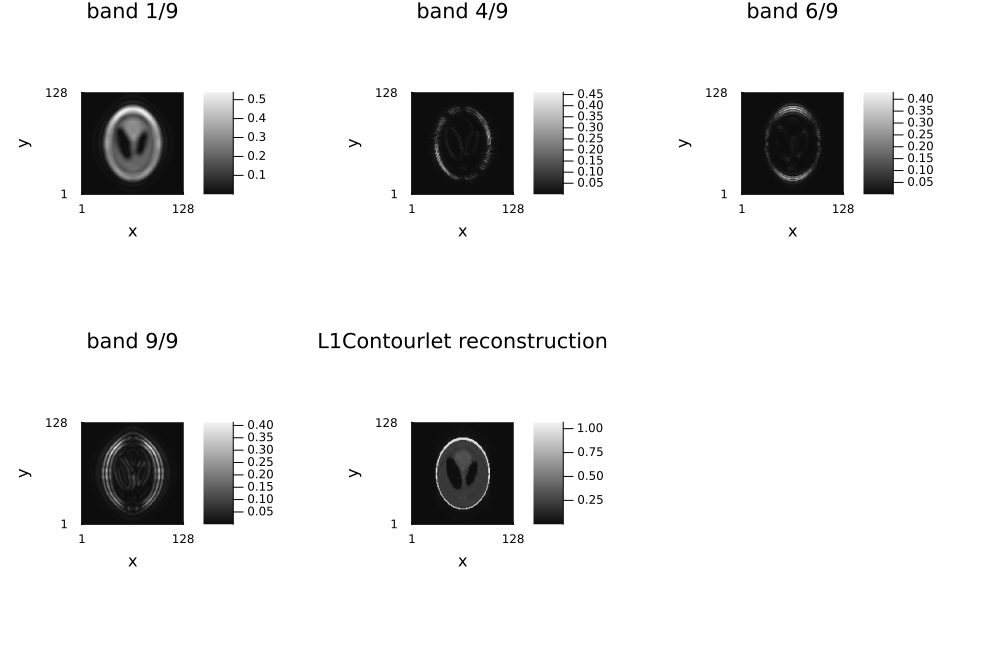
4. Total variation
TotalVariation2D
Problem: $\min_x \tfrac12\|\mathcal{A}x - y\|_2^2 + \lambda\sum_{\text{pixels}} \|\nabla x\|_2$
Description: The isotropic gradient magnitude, summed over pixels. It favours piecewise-constant images, which is why it preserves edges better than any of the terms above — and why, at too large a λ, it renders smooth intensity variation as a flight of steps (staircasing), the artefact the second-order terms below exist to remove. The finite-difference operator is not tight, so this term cannot be composed into a single proximal map: Ristretto solves it with ADMM rather than the proximal-gradient default (POGM).
References:
- L. I. Rudin, S. Osher, and E. Fatemi, "Nonlinear total variation based noise removal algorithms," Physica D: Nonlinear Phenomena, vol. 60, no. 1–4, pp. 259–268, 1992, doi: 10.1016/0167-2789(92)90242-F — the penalty itself.
- K. T. Block, M. Uecker, and J. Frahm, "Undersampled radial MRI with multiple coils: Iterative image reconstruction using a total variation constraint," Magnetic Resonance in Medicine, vol. 57, no. 6, pp. 1086–1098, 2007, doi: 10.1002/mrm.21236 — its MRI reconstruction application.
Availability in other toolboxes:
- BART —
pics -R T:7:0:λ(the first bitmask selects the dimensions the gradient runs over). - SigPy —
sigpy.mri.app.TotalVariationRecon(ksp, mps, lamda). - MRIReco.jl —
TVRegularization(λ), though its own docs recommendL1Regularizationwith aGradientOptransform instead, becauseTVRegularizationroutes through an inexact nested dual solve.
reg_tv = TotalVariation2D(1.0f-3)
∇ = get_operator(reg_tv, x_true)
grad = ∇ * x_noisy
x_tv = show_recon(IterativeReconstruction(reg_tv; maxit = 60), "TotalVariation2D λ=1e-3")
jim(
jim(grad[:, :, 1]; title = "dx"),
jim(grad[:, :, 2]; title = "dy"),
jim(x_tv; title = "TV reconstruction");
layout = (1, 3), size = (1050, 300)
)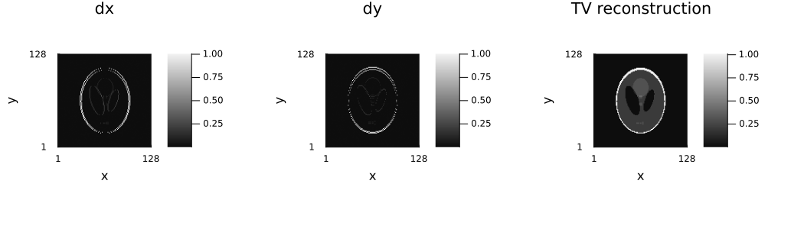
TotalVariation3D
Problem: $\min_x \tfrac12\|\mathcal{A}x - y\|_2^2 + \lambda\sum_{\text{voxels}} \|\nabla_{3D} x\|_2$
Description: the same penalty as TotalVariation2D with the gradient taken over all three spatial dimensions, so through-plane structure is regularized too.
References: as TotalVariation2D above (Rudin–Osher–Fatemi 1992; Block, Uecker & Frahm 2007), both cited in full in the previous section.
Availability in other toolboxes:
- BART — the same
pics -R Toption; the dimension bitmask carries the 3D form. - SigPy —
sigpy.mri.app.TotalVariationReconwith a 3Dmps: itsaxesargument defaults to every image dimension, so a 3D shape gives a 3D gradient. - MRIReco.jl —
TVRegularization(λ; shape = (nx, ny, nz), dims = 1:3): the term takes the image shape and the dimensions the gradient acts over, so 3D is the same type with different arguments.
x3d_tv = reconstruct(data3d, IterativeReconstruction(TotalVariation3D(1.0f-3); maxit = 30))
println("3D TV NRMSE: ", round(nrmse(x3d_tv, x3d), digits = 4))
jim(x3d_tv[:, :, 9:4:29]; title = "TotalVariation3D, four slices", nrow = 1, size = (1000, 280))AnisotropicTotalVariation2D / AnisotropicTotalVariation3D
Problem: $\min_x \tfrac12\|\mathcal{A}x - y\|_2^2 + \lambda\big(\|\nabla_x x\|_1 + \|\nabla_y x\|_1\big)$ — the same finite differences as above, summed with an ℓ₁ norm instead of the isotropic ℓ₂,₁ mixed norm.
Description: the directional derivatives are penalized independently rather than as a gradient vector per pixel. The penalty is then separable, so its proximal map is plain soft thresholding of the difference coefficients — cheaper than the isotropic prox, and usable by a proximal-gradient algorithm. The price is that it is no longer rotation invariant: it is cheapest for edges aligned with the sampling grid, so it favours horizontal and vertical structure and can leave a faint axis-aligned staircase on diagonal boundaries. Prefer it when the object genuinely is axis-aligned (phantoms, hardware, rectangular structure); prefer the isotropic term for anatomy.
References:
- L. I. Rudin, S. Osher, and E. Fatemi, "Nonlinear total variation based noise removal algorithms," Physica D: Nonlinear Phenomena, vol. 60, no. 1–4, pp. 259–268, 1992, doi: 10.1016/0167-2789(92)90242-F.
- A. Chambolle and T. Pock, "A first-order primal-dual algorithm for convex problems with applications to imaging," Journal of Mathematical Imaging and Vision, vol. 40, no. 1, pp. 120–145, 2011, doi: 10.1007/s10851-010-0251-1 — states both discretizations side by side.
Availability in other toolboxes:
- BART — not available.
-R T:xflags:jflags:λalways adds the gradient-direction dimension to the joint-thresholding flags (optreg.c,case TV), sopicsthresholds the directional derivatives jointly: the isotropic form is the only one it can produce. - SigPy — not supported; the packaged
TotalVariationReconapp is isotropic. - MRIReco.jl —
L1Regularization(λ)with aGradientOpregTrafo, which is exactly this term (itsTVRegularizationis the isotropic one).
x_tv_aniso = show_recon(
IterativeReconstruction(AnisotropicTotalVariation2D(1.0f-3); maxit = 60),
"AnisotropicTotalVariation2D λ=1e-3"
)
jim(
jim(x_tv; title = "isotropic TV"),
jim(x_tv_aniso; title = "anisotropic TV"),
difference_image(x_tv_aniso, x_tv; title = "difference");
layout = (1, 3), size = (1050, 300)
)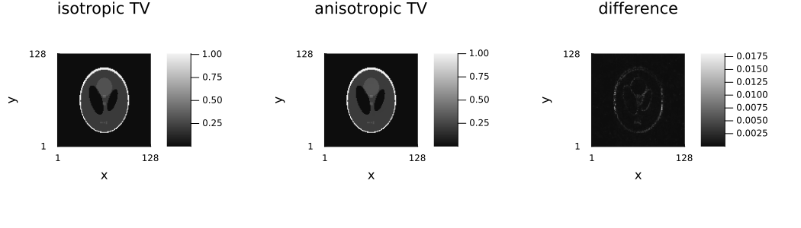
Second-order TV and TGV
Problem: second-order TV adds the term as written,
\[\min_x \ \tfrac12\|\mathcal{A}x - y\|_2^2 + \lambda_1\|\nabla x\|_1 + \lambda_2\|\nabla^2 x\|_1,\]
while TGV introduces an auxiliary vector field $w$ and minimizes over both variables:
\[\min_{x, w} \ \tfrac12\|\mathcal{A}x - y\|_2^2 + \alpha_1\|\nabla x - w\|_1 + \alpha_0\|\mathcal{E}w\|_1\]
with $\mathcal{E}$ the symmetrized gradient.
Description: First-order TV charges a smooth intensity ramp; second-order TV does not, but blurs jumps. TGV makes that trade-off adaptively per voxel: where $w \approx \nabla x$ the penalty falls on $\mathcal{E}w$ and the region is allowed to be smooth, where $w \approx 0$ it falls on $\nabla x$ and the region is allowed a jump. The cost is roughly twice the unknowns and a coupled problem: $w$ is tied to $x$ through $\nabla x - w$, which proximal-gradient algorithms cannot separate, so both this and TV+TV² pin algorithm = ADMM() below.
References:
- K. Bredies, K. Kunisch, and T. Pock, "Total generalized variation," SIAM Journal on Imaging Sciences, vol. 3, no. 3, pp. 492–526, 2010, doi: 10.1137/090769521 — introduces TGV.
- F. Knoll, K. Bredies, T. Pock, and R. Stollberger, "Second order total generalized variation (TGV) for MRI," Magnetic Resonance in Medicine, vol. 65, no. 2, pp. 480–491, 2011, doi: 10.1002/mrm.22595 — applies it to reconstruction.
Availability in other toolboxes:
- BART —
pics -R G:7:0:λfor TGV (and-R C/-R Vfor the infimal-convolution variants of tutorial 7 §5). - SigPy — none.
- MRIReco.jl — none.
x_tv2 = show_recon(
IterativeReconstruction(
TotalVariation2D(1.0f-3), SecondOrderTotalVariation2D(2.0f-3);
algorithm = ADMM(), maxit = 60
),
"TV + second-order TV"
)
x_tgv = show_recon(
IterativeReconstruction(TotalGeneralizedVariation2D(1.0f-3); algorithm = ADMM(), maxit = 60),
"TotalGeneralizedVariation2D λ=1e-3"
)
jim(
jim(x_tv; title = "TV"),
jim(x_tv2; title = "TV + TV^2"),
jim(x_tgv; title = "TGV");
layout = (1, 3), size = (1050, 300)
)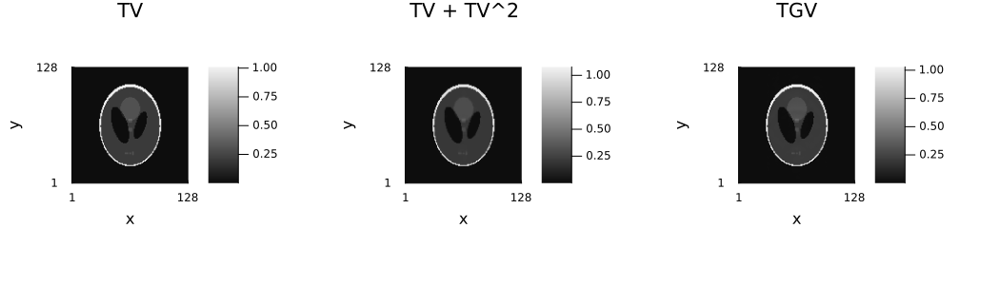
EdgePreservingRoughness2D (Huber)
Problem: $\min_x \tfrac12\|\mathcal{A}x - y\|_2^2 + \lambda \sum_{\text{pixels}} \phi_\delta(\nabla x)$, with
\[\phi_\delta(t) = \begin{cases} t^2 & |t| \le \delta \\ 2\delta|t| - \delta^2 & |t| > \delta \end{cases}\]
Description: A smooth interpolation between a quadratic roughness penalty and TV: differences below δ are treated as noise and smoothed quadratically, those above are preserved like TV. Being differentiable everywhere it needs no proximal step at all, so a plain gradient method solves it and there is no staircasing — the reason to prefer it over TV when the object has genuine smooth gradients. The price is a second parameter: δ is an absolute intensity, and a good recipe is a low percentile of the finite differences of a preliminary reconstruction, as below.
References:
- P. Charbonnier, L. Blanc-Féraud, G. Aubert, and M. Barlaud, "Deterministic edge-preserving regularization in computed imaging," IEEE Transactions on Image Processing, vol. 6, no. 2, pp. 298–311, 1997, doi: 10.1109/83.551699 — the edge-preserving potential family this implements.
- J. A. Fessler, "Model-based image reconstruction for MRI," IEEE Signal Processing Magazine, vol. 27, no. 4, pp. 81–89, 2010, doi: 10.1109/MSP.2010.936726 — the model-based-MRI application, and where the edge-preserving potential appears in this context.
Availability in other toolboxes:
- MIRT.jl — Fessler's Julia toolbox is the one place this potential is first class: its regularizer is built from a finite-difference operator plus a potential function, and the Huber potential is one of the choices (
potential_fun(:huber, δ)), withδthe same threshold as here. MIRT.jl is the closest relative of this term in any toolbox. - BART — none.
- SigPy — none.
using Statistics: quantile
diffs = abs.(diff(abs.(x_direct); dims = 1))
δ = Float32(quantile(vec(diffs), 0.15))
println("δ from the 15th percentile of |∇x_direct|: ", round(δ, digits = 5))
# A larger iteration budget than the other terms in this tutorial get, and for a reason worth
# knowing. Huber is the only *smooth* regularizer here, so it joins the data term in `f` rather
# than becoming a proximal term `g`. Ristretto sizes the proximal-gradient step from the encoding
# operator alone (`Lf = n‖𝒜‖²`, tutorial 06 §7), which does not see the curvature the Huber term
# adds, so the step is a little too long for this `f` and the solver spends iterations correcting
# instead of descending. It converges to the same place — it just takes longer to get there.
#
# A natural question at this point is whether a smooth term could go to CG or CGNR instead, since
# those need no step size at all. It cannot: CG and CGNR minimize a *quadratic*, where the
# gradient is a fixed linear operator and a Krylov subspace means something. Huber's gradient is
# linear only below `δ` and constant-slope above it, so there is no such operator — which is
# exactly what `CGNRIteration`'s `get_assumptions` declaration says when it asks for a
# least-squares model, and why the parser never offers it this one. The classical way to get CG's
# speed here is *quadratic majorization* (Fessler's optimization transfer): replace the Huber
# term at each outer step by a weighted quadratic that touches it at the current iterate, and
# solve that inner least-squares problem with CG. Ristretto has no such surrogate — it hands the term to
# the proximal-gradient family as a smooth function and pays the iterations instead.
x_huber = show_recon(
IterativeReconstruction(EdgePreservingRoughness2D(1.0f-3; δ = δ); maxit = 300, reltol = 0.0),
"EdgePreservingRoughness2D"
)
jim(x_huber; title = "Huber roughness penalty", size = (400, 350))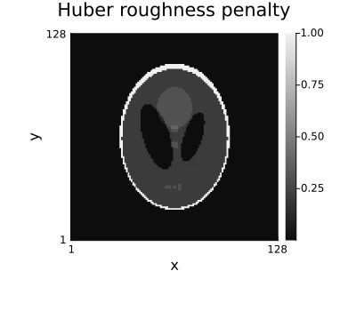
5. Non-convex sparsity
Problem: in the penalty form,
\[\min_x \ \tfrac12\|\mathcal{A}x - y\|_2^2 + \lambda\|\mathcal{W}x\|_0,\]
and in the constraint form, which is how the count variant is stated,
\[\min_x \ \tfrac12\|\mathcal{A}x - y\|_2^2 \quad \text{subject to} \quad \|\mathcal{W}x\|_0 \le n.\]
Description: $\ell_1$ shrinks the coefficients it keeps, so intensities come out systematically underestimated. Hard thresholding keeps or kills a coefficient and never shrinks it — unbiased amplitudes, which for a lesion or a vessel is the quantity of interest. The price is non-convexity: the result depends on the starting image, so warm-starting from the $\ell_1$ solution is the standard recipe (and is what the cells below do). Note the threshold is sqrt(2γλ) rather than γλ, so an ℓ₁ λ carried over gives a completely different sparsity level and has to be retuned. On this phantom the ℓ₁ solution stays ahead on NRMSE — the argument for the ℓ₀ terms is the unbiased amplitude, not a better global error.
References:
- T. Blumensath and M. E. Davies, "Iterative hard thresholding for compressed sensing," Applied and Computational Harmonic Analysis, vol. 27, no. 3, pp. 265–274, 2009, doi: 10.1016/j.acha.2009.04.002 — the algorithm both the penalty form (
threshold) and the constraint form (count) come from.
Availability in other toolboxes:
- BART —
pics -R N:7:0:λis NIHT in the image domain (L0Image),-R H:7:0:λis NIHT on wavelet coefficients (L0Wavelet2D). - SigPy — none.
- MRIReco.jl — none.
The count constraint form has no equivalent in any of the three; it is the sparsity analogue of RankLimit.
x_hard = show_recon(
IterativeReconstruction(L0Wavelet2D(threshold = 2.0f-4); maxit = 40),
"L0Wavelet2D threshold (warm start)"; x₀ = x_wav
)
# The `count` form constrains the *number* of non-zero coefficients instead of penalizing them.
x_sparsity = show_recon(
IterativeReconstruction(L0Wavelet2D(count = 2000); maxit = 40),
"L0Wavelet2D count=2000 (warm start)"; x₀ = x_wav
)
jim(
jim(x_wav; title = "L1 wavelet"),
jim(x_hard; title = "L0 (threshold) wavelet"),
jim(x_sparsity; title = "L0 (count) wavelet");
layout = (1, 3), size = (1050, 300)
)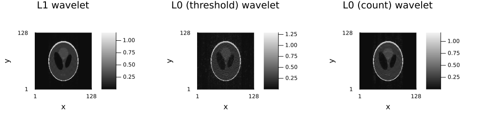
L0Image is the same hard thresholding applied to the pixels themselves rather than to wavelet coefficients — the ℓ₀ counterpart of L1Image, with the same threshold and count forms. It suits an object that is sparse in the image domain (angiography, hardware, the tubes phantom of §7); on a Shepp–Logan phantom, which is piecewise constant but not sparse, it is the wrong prior and the cell below shows exactly that.
x_l0_image = show_recon(
IterativeReconstruction(L0Image(threshold = 2.0f-4); maxit = 40),
"L0Image threshold (warm start)"; x₀ = x_wav
)
x_l0_image_count = show_recon(
IterativeReconstruction(L0Image(count = 4000); maxit = 40),
"L0Image count=4000 (warm start)"; x₀ = x_wav
)
jim(
jim(x_l0_image; title = "L0Image (threshold)"),
jim(x_l0_image_count; title = "L0Image (count)"),
jim(x_hard; title = "L0 wavelet, for comparison");
layout = (1, 3), size = (1050, 300)
)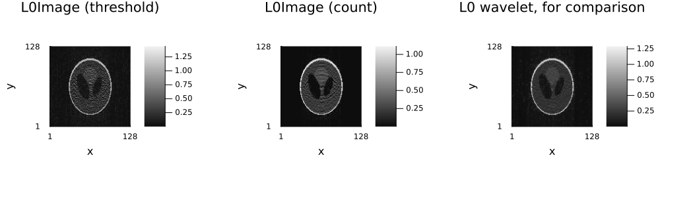
6. Plug-and-play priors
Problem: there is no explicit penalty to write down. The problem solved is
\[\min_x \ \tfrac12\|\mathcal{A}x - y\|_2^2 + R(x)\]
where $R$ is known only through its proximal operator, $\mathrm{prox}_{\gamma R}(x) = \mathrm{denoiser}(x, \sigma)$ — the algorithm never needs $R$ itself, only that step.
Description: PlugAndPlay uses any callable denoiser(image, σ) as that proximal operator, i.e. as an implicit image prior. Its strength is that state-of-the-art denoisers (BM3D, trained networks) are far better image models than any penalty anyone can write down. Its weaknesses follow from the same fact: there is no objective value, so convergence cannot be checked against one and line-search algorithms cannot be used; convergence is only guaranteed for denoisers with properties most real ones are not proven to have; and the result depends on a denoiser that is not part of the reconstruction's own mathematics.
References:
- S. V. Venkatakrishnan, C. A. Bouman, and B. Wohlberg, "Plug-and-play priors for model based reconstruction," in Proc. IEEE Global Conference on Signal and Information Processing (GlobalSIP), 2013, pp. 945–948, doi: 10.1109/GlobalSIP.2013.6737048 — introduces the idea.
- R. Ahmad, C. A. Bouman, G. T. Buzzard, S. Chan, S. Liu, E. T. Reehorst, and P. Schniter, "Plug-and-play methods for magnetic resonance imaging," IEEE Signal Processing Magazine, vol. 37, no. 1, pp. 105–116, 2020, doi: 10.1109/MSP.2019.2949470 (arXiv:1903.08616, open access) — surveys it for MRI.
Availability in other toolboxes:
- MRIReco.jl —
PlugAndPlayRegularization, which takes a Julia callable: the closest match to Ristretto's interface. - BART —
pics -R TF:{graph}:λ, a plug-and-play prior restricted to a denoiser exported as a TensorFlow graph, a narrower interface than "any callable". - SigPy — none.
No denoiser ships with Ristretto — BM3D or a trained network are the usual choices. To show the wiring (and to check it), a soft-thresholding "denoiser" reproduces the proximal operator of L1Image exactly; the two reconstructions then agree to a couple of percent, the remaining difference coming from the adaptive step size (the plug-and-play term has no objective value to backtrack on). Because the implicit prior has no value function, the reported objective is NaN and objective-based convergence checks are meaningless — this is the one place in the tutorial where the algorithm has to be pinned explicitly: ISTA or ADMM with a fixed iteration budget, never a line-search algorithm.
complex_handling decides what the denoiser sees: :split (default) denoises the real and imaginary parts separately, :magnitude denoises the magnitude and keeps the phase — the latter is what matches complex soft thresholding.
# The denoiser is called as `denoiser(image, σ)` with `σ = strength * sqrt(γ)`, and the prox of
# `L1Image(λ)` corresponds to thresholding at `σ²` — hence `strength = sqrt(λ)` below.
soft(image, σ) = sign.(image) .* max.(abs.(image) .- σ^2, 0)
λ_pnp = 5.0f-3
x_pnp = show_recon(
IterativeReconstruction(
PlugAndPlay(soft; strength = sqrt(λ_pnp), complex_handling = :magnitude);
algorithm = ISTA(), maxit = 60
),
"PlugAndPlay(soft threshold)"
)
x_l1_ista = reconstruct(
data, IterativeReconstruction(L1Image(λ_pnp); algorithm = ISTA(), maxit = 60)
)
println("‖PnP − L1Image‖/‖L1Image‖ = ", round(norm(x_pnp - x_l1_ista) / norm(x_l1_ista), digits = 6))PlugAndPlay(soft threshold) — NRMSE 0.225
‖PnP − L1Image‖/‖L1Image‖ = 0.011768(With this Ristretto version, the accelerated proximal-gradient path rejects the term at problem-parsing time — both POGM and FISTA require a convex proximable term — while ISTA and ADMM work.)
7. Joint sparsity and reference priors
JointSparsity
Problem: $\min_x \tfrac12\|\mathcal{A}x - y\|_2^2 + \lambda\|x\|_{2,1}$, with $\|x\|_{2,1} = \sum_{\text{pixels}} \big(\sum_{\text{contrasts}} |x|^2\big)^{1/2}$
Description: Multi-echo / multi-contrast images of the same anatomy share their edge locations. The joint $\ell_{2,1}$ norm couples them so that a coefficient is either non-zero in every contrast or in none, which recovers a weak contrast from the support the strong ones agree on. It fails exactly when the assumption does: a structure genuinely present in one contrast only is penalized as if it were noise.
References:
- A. Majumdar and R. K. Ward, "Joint reconstruction of multiecho MR images using correlated sparsity," Magnetic Resonance Imaging, vol. 29, no. 7, pp. 899–906, 2011, doi: 10.1016/j.mri.2011.03.008.
Availability in other toolboxes:
- MRIReco.jl —
L21Regularization(λ; slices = n), a dedicated type. - BART — yes, through the joint threshold flags rather than a separate option. Every
pics -Rregularizer takes its dimensions as-R <T>:A:B:λ, whereAselects the transformed dimensions andBselects the dimensions thresholded jointly:-R I:0:8:λis an ℓ₁ penalty in the image domain with dimension 3 (bit 8) thresholded as a group, i.e. exactly the ℓ₂,₁ norm over that axis. The sameBargument makes-R Wa joint-sparse wavelet penalty. - SigPy — no packaged joint-sparsity app; the ℓ₂,₁ prox would have to be supplied by hand.
# Three "echoes" of the same anatomy with different contrast: six tubes at fixed relative
# fillings, scaled together per echo the way multi-echo signal decays — a more realistic
# multi-contrast test than a single phantom uniformly dimmed.
n = 64
base_fillings = [0.1, 0.3, 0.5, 0.7, 0.9, 1.0]
echo_intensities = [TubesIntensities(tube_fillings = base_fillings .* w) for w in (1.0, 0.7, 0.45)]
# Named dimensions, so the term says which axis the contrasts live on by name rather than by
# position: `dim = :echo` reads as what it means and survives a change in the dimension order,
# where `dim = 3` silently regularizes the wrong axis.
echoes = NamedDimsArray{(:x, :y, :echo)}(
create_tubes_phantom(n, n, :axial; ti = echo_intensities, eltype = ComplexF32)
)
acq_me = AcquisitionInfo(;
is3D = false,
image_size = (n, n),
sensitivity_maps = NamedDimsArray{(:x, :y, :coil)}(coil_sensitivities(n, n, 4)),
subsampling = create_sampling_pattern(
VariableDensitySampling(PolynomialDistribution(3), 3.0, 0.05), (n, n)
),
)
data_me = simulate_acquisition(echoes, acq_me; keep_sensitivity_maps = true)
println(dimnames(data_me.kspace_data), " ", size(data_me.kspace_data))
x_joint = reconstruct(
data_me, IterativeReconstruction(JointSparsity(5.0f-3; dim = :echo); maxit = 40)
)
println("joint NRMSE: ", round(nrmse(x_joint, echoes), digits = 4))
jim(x_joint; title = "JointSparsity — three echoes", nrow = 1, size = (900, 300))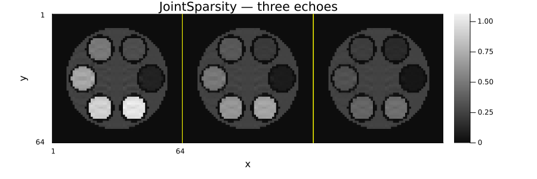
ReferencePrior
Problem:
\[\min_x \ \tfrac12\|\mathcal{A}x - y\|_2^2 + \lambda\|x - x_{\text{ref}}\|_1 + \mu\|\mathcal{W}x\|_1\]
The second term is the ordinary sparsity penalty the reference prior should always be paired with.
Description: Penalizes the difference to a known image — a temporal average, a previous exam — instead of the image itself, which is the PICCS idea. Where the reference is right this is by far the strongest prior available, because it constrains the value rather than the smoothness. Where it is wrong it hallucinates the reference into the result, which is why it is combined with an ordinary sparsity term so a wrong reference cannot dominate.
References:
- G.-H. Chen, J. Tang, and S. Leng, "Prior image constrained compressed sensing (PICCS): A method to accurately reconstruct dynamic CT images from highly undersampled projection data sets," Medical Physics, vol. 35, no. 2, pp. 660–663, 2008, doi: 10.1118/1.2836423.
Availability in other toolboxes:
- BART — none.
- SigPy — none.
- MRIReco.jl — none.
The closest building block elsewhere is a plain ℓ₁ penalty applied to a manually formed difference image.
Ristretto picks the solver automatically — two non-smooth terms together mean ADMM, without needing algorithm = ADMM() spelled out.
x_ref = x_wav # pretend this is a prior high-quality scan
x_piccs = show_recon(
IterativeReconstruction(ReferencePrior(1.0f-2, x_ref), L1Wavelet2D(1.0f-3); maxit = 40),
"ReferencePrior + L1Wavelet2D"
)
jim(x_piccs; title = "reference-constrained reconstruction", size = (400, 350))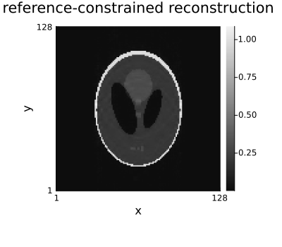
8. Constraints
Problem: a constraint, not a penalty — which is why these carry no λ:
\[\min_x \ \tfrac12\|\mathcal{A}x - y\|_2^2 \quad \text{subject to} \quad x \in C,\]
with $C = \{x \ge 0\}$ for NonNegative and $C = [a, b]$ for BoxConstraint. Internally this is the indicator function $\iota_C$, whose proximal operator is the projection onto $C$.
Description: Constraints encode what an image cannot be rather than what it should look like, so unlike every penalty above they cost no accuracy where they are true: a proton density or a $T_2$ map is non-negative as a matter of physics. Their natural home is quantitative maps and magnitude-only models. The catch is that a standard MRI reconstruction produces a complex image, for which "non-negative" is not defined — Ristretto therefore throws by default and offers complex_handling = :real (below) to project onto the real non-negative orthant instead.
References: the projection itself is elementary — it is the clamp — so the reference worth giving is for the machinery that lets a constraint sit in the same problem as a penalty:
- P. L. Combettes and J.-C. Pesquet, "Proximal splitting methods in signal processing," in Fixed-Point Algorithms for Inverse Problems in Science and Engineering, Springer, 2011, pp. 185–212, doi: 10.1007/978-1-4419-9569-8_10 (arXiv:0912.3522, open access) — indicator functions, their proximal operators, and how a constraint enters a splitting algorithm as one more prox.
Availability in other toolboxes:
- BART —
pics -R S:0:0:0is the non-negative constraint, andpics -cseparately constrains the image to be real-valued (there is no-R POS). - SigPy —
sigpy.prox.BoxConstraint(shape, lower, upper), withlower = 0for non-negativity. - MRIReco.jl —
PositiveRegularization()for non-negativity andRealRegularization()for the real-valued constraint, both of which take the real part the way Ristretto's:realhandling does.
println(NonNegative())
println(BoxConstraint(0.0, 1.0))
try
reconstruct(data, IterativeReconstruction(TotalVariation2D(1.0f-3), NonNegative()))
catch e
println("\nOn complex data, default (:error): ", sprint(showerror, e))
endNonNegative(:error)
BoxConstraint{Float64, Float64}(0.0, 1.0, :error)
On complex data, default (:error): ArgumentError: NonNegative is only defined for real-valued images, got eltype ComplexF32 (pass complex_handling = :real to project onto the real orthant/box instead)
false must hold.complex_handling = :real projects onto the real, non-negative orthant instead of throwing: the imaginary part is discarded and the real part clamped at 0. On the real, non-negative Shepp–Logan phantom used throughout this tutorial, adding that constraint to TV should only help — it rules out images the true one could never be.
x_tv_only = show_recon(IterativeReconstruction(TotalVariation2D(1.0f-3); maxit = 60), "TV alone")
x_tv_pos = show_recon(
IterativeReconstruction(TotalVariation2D(1.0f-3), NonNegative(; complex_handling = :real); maxit = 60),
"TV + NonNegative(:real)"
)
println("NonNegative(:real) improves on TV alone: ", nrmse1(x_tv_pos) < nrmse1(x_tv_only))
side_by_side(x_tv_only, x_tv_pos; titles = ("TV alone", "TV + NonNegative(:real)"))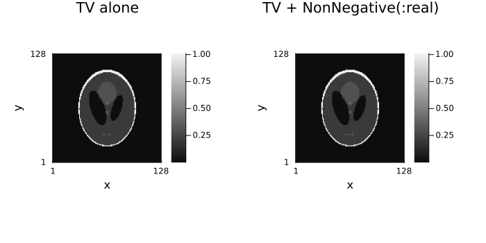
9. Combining terms, and choosing λ
Terms are simply listed; Ristretto picks a solver that can handle the combination (ADMM, in practice, as soon as there is more than one non-smooth term or a non-tight operator) — no algorithm = ... keyword is needed here either.
x_combo = show_recon(
IterativeReconstruction(L1Wavelet2D(1.5f-3), TotalVariation2D(5.0f-4); maxit = 60),
"L1Wavelet2D + TotalVariation2D"
)
jim(
jim(x_wav; title = "wavelet only"),
jim(x_combo; title = "wavelet + TV");
layout = (1, 2), size = (800, 350)
)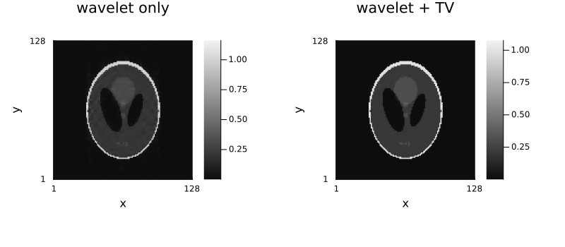
Starting values for λ
Because the problem solved is $\tfrac12\|\mathcal{A}x-y\|^2 + \lambda R(x)$ with no operator rescaling, λ is in the data's own units and the reconstructed image comes back in those units.
| Regularizer | Typical λ |
|---|---|
L2Image | 1e-5 … 1e-3 |
L1Image | 1e-4 … 1e-2 |
L1Wavelet2D/3D, L1Contourlet | 1e-3 … 1e-2 |
TotalVariation2D/3D | 1e-4 … 5e-3 |
AnisotropicTotalVariation2D/3D | 1e-4 … 5e-3, the same range as the isotropic term |
SecondOrderTotalVariation2D | ≈ 2× the first-order λ |
TotalGeneralizedVariation2D | as TotalVariation2D; leave ratio = 2.0 |
EdgePreservingRoughness2D | 1e-4 … 5e-3, δ from the data |
L0Image, L0Wavelet2D, L0Wavelet3D (threshold form) | 1e-4 … 1e-2 (threshold is sqrt(2γλ) — retune, don't reuse an ℓ₁ λ) |
JointSparsity | 1e-3 … 1e-2 |
ReferencePrior | 1e-3 … 1e-1 |
L1TemporalFourier, TemporalTotalVariation | 1e-2 … 1e-1 |
LowRank, LocallyLowRank, MultiScaleLowRank | 1e-2 … 5e-1 |
Too noisy or aliased → increase λ; too smooth → decrease it; move in factors of 2–5.
λs = Float32[8.0e-4, 2.0e-3, 5.0e-3, 1.2e-2]
sweep = map(λs) do λ
x̂ = reconstruct(data, IterativeReconstruction(L1Wavelet2D(λ); maxit = 40))
jim(x̂; title = "λ = $λ\nNRMSE $(round(nrmse1(x̂), digits = 3))")
end
jim(sweep...; layout = grid_layout(length(sweep)), size = (1000, 660))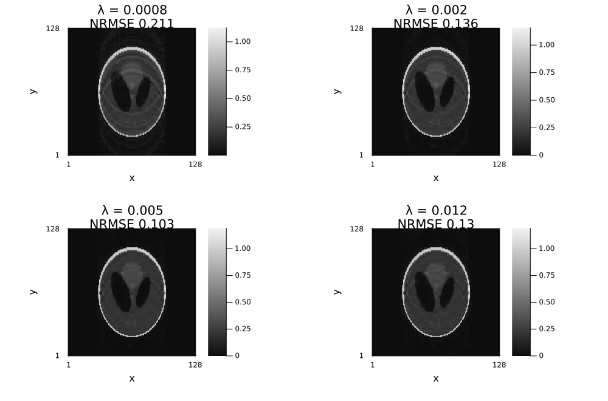
Not covered here
The temporal and low-rank terms — L1TemporalFourier, TemporalTotalVariation, LowRank, RankLimit, LocallyLowRank, MultiScaleLowRank — need a dynamic series; they are covered in 07_dynamic_and_decomposition.md, together with the additive Component models (L+S).
Further reading
Why any of this is necessary, from Questions and Answers in MRI:
- Compressed sensing — the three ingredients (incoherent sampling, a sparsifying transform, iterative reconstruction) this whole tutorial is the third of.
- k-space: parts — why undersampling the periphery costs detail rather than contrast, which is what every λ here trades against.
- Parallel imaging: noise — the noise amplification these penalties are suppressing.
Environment
print_versions()Julia Version 1.13.1
Commit 96ca370cf0e (2026-09-25 19:34 UTC)
Build Info:
Official https://julialang.org release
Platform Info:
OS: Linux (x86_64-linux-gnu)
CPU: 4 × AMD EPYC 9V45 96-Core Processor
WORD_SIZE: 64
LLVM: libLLVM-20.1.8 (ORCJIT, znver5)
GC: Built with stock GC
Threads: 2 default, 1 interactive, 2 GC (on 4 virtual cores)
Environment:
JULIA_PKG_SERVER_REGISTRY_PREFERENCE = eager
JULIA_NUM_THREADS = 2
Ristretto 0.1.0 (dev)
AbstractOperators not loaded
FFTWOperators not loaded
NFFTOperators not loaded
WaveletOperators not loaded
DSPOperators not loaded
ContourletOperators not loaded
StructuredOptimization not loaded
ProximalOperators not loaded
ProximalAlgorithms not loaded
OperatorCore not loaded
NestedThreading 0.1.3